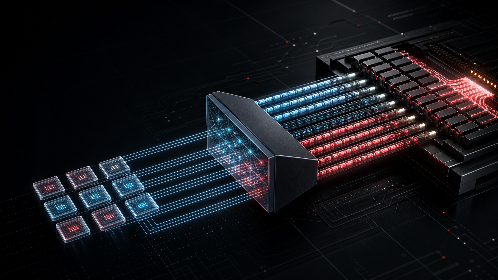

01 · LOAD
10-byte block
Eight packed code bytes and two UE4M3 scale bytes arrive from memory.
q0q1…e0/e1

 Ciru Inference LabCrown Citadel Research Report
Ciru Inference LabCrown Citadel Research Report
ROCmFP2 stores 32 neural-network weights as eight packed code bytes plus two tiny scale bytes. At runtime those codes become signed int8 lanes, feed AMD’s packed four-way dot instruction, and only then regain their scale.
Yes—FP2 has a place, but as a speed-and-capacity tier on the bulk expert path, not as a blanket every-tensor recipe.
On HY3, the FP2-dominant Speed‑v1 artifact is 2.55% smaller than IQ2_M, cuts end-to-end no-MTP latency by about 2.4% on a short code prompt and 6.2% on a 19,654-token code prompt, and still scores 81 on HermesAgent‑20 and 86 on the full 69-case Tool‑Eval. A larger FP3-heavy candidate was slower and scored worse on the discriminating tests.
A block covers 32 original weights. It is split into two 16-weight halves so each half can choose its own scale. Every group of four weights becomes one byte: four 2-bit selectors packed little-endian.
Two raw bits can name only four states. ROCmFP2 spends the remaining 0.50 bit/weight on two shared scales. That lets the same four integers represent tiny or large weights without storing a floating-point value per weight.
Exact serialized block sizes. FP3 is 12 code bytes + 2 scale bytes; BF16 is 64 data bytes.
The frozen S40/MORD order is not a 256-entry table and it has no zero. It is exactly four signed integer reconstruction levels. Sign chooses the side; normalized magnitude chooses inner or outer at the midpoint 2.5.
The scale metadata is unsigned UE4M3: four exponent bits and three mantissa bits. Bytes 0x00…0x7E are valid; 0x7F is rejected. The positive range runs from 2⁻¹⁰ = 0.0009765625 to 224.
The fast path never expands FP2 weights to FP16 one by one. It expands each stored byte directly into four signed int8 lanes, performs four multiply-adds together against Q8_1 activations, accumulates in int32, then applies the two scales.
Eight packed code bytes and two UE4M3 scale bytes arrive from memory.
Bit-plane arithmetic spreads four adjacent 2-bit codes into four byte selectors.
v_perm_b32 selects bytes from the packed constant table {−4,−1,+1,+4}.
RDNA3/RDNA4 uses __builtin_amdgcn_sudot4: four signed 8-bit products plus an int32 accumulator.
Each half’s integer sum is multiplied by its decoded weight scale and the Q8_1 activation scale.
The codebook is a four-byte constant, not a large irregular lookup grid. One GPU byte-permute produces exactly the packed signed-byte shape consumed by AMD’s native four-lane integer dot instruction. That keeps the arithmetic dense while the model traffic stays at 2.5 BPW.
The key is separation of concerns: the codebook carries shape, UE4M3 carries range, int8 dot4 carries compute, and scaling happens after accumulation.
At only two bits, unpack cost is large relative to payload. The first kernel expanded FP2 separately for every MTP verification column, leaving the dot unit underfed. The optimized multi-column path expands a target block once and reuses it across all Q8_1 columns.
That change is FP2-only and compile-time opt-in; other quants keep their existing kernel paths.
Clean paired average, exact HY3 expert shapes. Lower is better.
Speed‑v1 puts FP2 on all 237 trunk routed-expert tensors, keeps attention/shared tensors at higher precision, and leaves the three MTP expert tensors at FP3. That is deliberately an FP2-dominant recipe—not a claim that every tensor tolerates two bits.
Five-shard realized GGUF sizes. Smaller is better.
128 generated tokens. Log axis keeps both prompt lengths legible.
HA‑20 raw score 81.25, reported as 81.
The end-to-end win comes from faster prefill and lower model traffic. Raw no-MTP TG trails IQ2_M by about 2.1% short and 1.5% long.
All five bars scored 100/100; the chart isolates wall time. FP2 n=2 was selected.
On the short code prompt, n=2 MTP lowers total time to 8.979 s. On the 19,654-token prompt it raises total time to 166.333 s even though decode itself jumps to 7.865 TG, because draft-prefill overhead dominates. This is why tiny prompts cannot select an MTP config alone.
| Gate | Score | Wall time | Read |
|---|---|---|---|
| HermesAgent‑08 | 100 / 100 | 62.446 s | n=2 MTP selector |
| Tool‑Eval core15 | 100 / 100 | 175.3 s | 21.2% faster than IQ2_M |
| HermesAgent‑20 | 81 / 100 | 1,457.29 s | 81.25 raw; strong promotion result |
| Tool‑Eval full69 | 86 / 100 | 1,697.287 s | 119/138 · 57 pass · 5 partial · 7 fail |
It does not alter the ten-byte block, the codebook, or the AMD kernel. It changes only which UE4M3 scale wins the offline error search: important channels contribute more to the objective.
Constructed implementation test: weighted error 0.510835 → 9.13573×10⁻⁵. This proves the weighting path works; it does not predict model-level quality by itself.
| Loader / coherence / tool | PASS · 24.56 s · 323 · native tool JSON |
|---|---|
| Tensor payload/layout | PASS · identical; +224-byte provenance header |
| No-MTP parity | PASS · no repeatable regression |
| MTP long prompt | 6.521 TG · 20/28 accepted · total +0.75% |
| Quality screen | HA‑08 100 · core15 100 · targeted 425/425 |
| Full Tool‑Eval69 | 88/100 · 122/138 · beats control 86/100 |
| Operational cache | 8 GiB active · largest update 173.03 ms · no timeout |
| Disposition | PASS · promoted quality/no-MTP FP2 lane |
The imatrix applies to every covered quantized tensor in the unchanged recipe, including protected higher-precision tensors—not only FP2. The MTP block lacks matrix entries and uses the existing unweighted path. The +224 bytes are four provenance fields and alignment; all 1,298 tensor types, payload lengths, and capacities match the control.
Positive means lower wall time. It improved both no-MTP prompts, short-prompt MTP, and the targeted Hermes scenario sum. The one exception was long-prompt MTP: total latency was 0.75% slower and decode acceptance fell, so that lane remains the control build’s strength. These are observed A/B results; repeat them before treating the exact percentages as universal.
Very large MoE expert tensors where memory traffic and prefill dominate, the codebook kernel has a tuned launch policy, and higher precision protects attention, embeddings, shared experts, and other fragile tensors.
That two bits automatically beat IQ2_M in raw token generation, that more FP3 automatically improves quality, or that one MTP n_max wins on both short and long prompts.
Promote the imatrix edition as the quality/no-MTP and short-workload FP2 lane: it scored 88 on full Tool‑Eval and was faster in four of five timing views. Keep the original build for long-generation MTP until its acceptance advantage is recovered through imatrix-specific MTP tuning.
| Claim family | Primary evidence | Status |
|---|---|---|
| Block layout, UE4M3, S40 codebook | src/ROCmFPX-hy3/ggml/rocmfpx/rocmfpx.hsrc/ROCmFPX-hy3/ggml/rocmfpx/rocmfpx.c | source-audited |
| AMD byte permute and dot4 path | src/ROCmFPX-hy3/ggml/src/ggml-cuda/vecdotq.cuhsrc/ROCmFPX-hy3/ggml/src/ggml-cuda/common.cuhsrc/ROCmFPX-hy3/ggml/src/ggml-cuda/mmvq.cu | source-audited |
| Kernel sweep and exact correctness | results/hy3-adaptive-rpb.tsvresults/hy3-adaptive-q2-final-correctness.log | measured |
| No-MTP / MTP API speed | results/*-api-short/results.jsonlresults/*-api-long/results.jsonl | measured |
| HA20 and Tool-Eval | /srv/ssd/p3700ba/data/llm-benchmarking-lab/.benchlocal-home/.benchlocal/runs/hermesagent-20/20260713T121558Z-hermesagent20-hy3-chadrock-speed-v1-mtp-n2-clean-eval/summary.json/srv/ssd/p3700ba/data/llm-benchmarking-lab/runs/2026/07/2026-07-13T13-56-30.458189Z_713cc7e5.md | measured |
| Imatrix H4 validation | experiments/h4-imatrix/results/artifact-gate.mdexperiments/h4-imatrix/results/{no-mtp,mtp-n2}-{short,long}/results.jsonl20260713T174811Z-…-targeted8/summary.json2026-07-13T18-19-21.426469Z_db0e22bb.md | validated; full Tool‑Eval winner |
Benchmark host: AMD Ryzen AI Max+ 395 / Radeon 8060S unified-memory system, ROCm llama.cpp fork. Timings are local single-host observations, not claims about all AMD architectures. MTP quality tests use the selected n=2 / Q8 draft-cache profile. The imatrix full Tool‑Eval ran in operational mode with the 8 GiB prompt cache active; real target+draft states were saved, the largest observed cache update was 173.03 ms, and no cache timeout occurred. The earlier 95.6 s event was not reproduced.